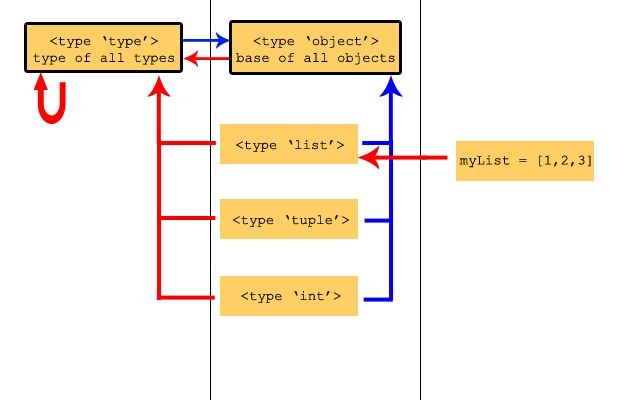

Python可变对象和不可变对象
在Python中所有的一切都是对象，都是继承同一个对象object。
object是所有对象的基类，type也是继承object
type是一切type的类型
借用某博客里的一张图片，他们的关系应该是这样的（蓝色表示继承，红色表示类型）

可变和不可变对象的区别
Python中的数据结构也可以分为可变对象和不可变对象两类
- 可变对象：
list,set,dict - 不可变对象：
tuple,int,float,string,bool
这里说的可变和不可变都是基于内存地址中的数据来区分的，看个例子
In [9]: a = [1,2,3]
In [10]: b = a
In [11]: b.append(4)
In [12]: a
Out[12]: [1, 2, 3, 4]在这里a和b都指向了同一个内存地址，因为是list，所以b能够修改内存地址当中的数据，所以打印a时就会输出内存地址当中修改后的数据。
下面看看不可变对象的例子
In [15]: a = (1,2,3)
In [16]: b = a
In [17]: b[0] = 4
---------------------------------------------------------------------------
TypeError Traceback (most recent call last)
<ipython-input-17-62bbbc50f611> in <module>()
----> 1 b[0] = 4
TypeError: 'tuple' object does not support item assignment因为tuple是不可变对象，既内存中记录的数据是不可以修改的，所以当我们修改数据时就出现了错误。
可能会有人疑问，不可变对象也是可以改变内存地址内容的，比如
In [18]: a = "test"
In [19]: b = a
In [20]: a = "hello"其实这并不是修改了内存地址中的数据，而是将a重新指向了另外一个内存地址，如果我们在打印输出b，就会发现b还是”test”。
从内存地址中更容易理解
id()方法可以查看内存地址，其实是不是内存地址，而是逻辑地址
可变对象：
In [21]: a = [1,2,3]
In [22]: id(a)
Out[22]: 4370511024
In [23]: b = a
In [24]: b.append(4)
In [25]: a
Out[25]: [1, 2, 3, 4]
In [26]: id(a)
Out[26]: 4370511024
In [27]: id(b)
Out[27]: 4370511024可以看到a和b指向的内存地址并没有发生变化
不可变对象：
In [28]: a = "test"
In [29]: id(a)
Out[29]: 4343187248
In [30]: b = a
In [31]: b = "hello"
In [32]: id(a)
Out[32]: 4343187248
In [33]: id(b)
Out[33]: 4372234608可以看到其实是b指向的内存地址变化了，并不是内存地址当中的数据发生变化了
可变对象和不可变对象的应用
我们在实际工作中应该避免使用可变对象作为函数参数传入，除非你明确的知道会发生什么。
这么做的原因是因为在Python当中是传递参数都是引用传递而不是值传递。关于引用传递可以简单的用下面的例子证明：
def test(args: int):
print(args, id(args))
args += 10
print(args, id(args))
if __name__ == "__main__":
args = 1
print(args, id(args))
test(args)
print(args, id(args))结果：
1 4517510832
1 4517510832
11 4517511152
1 4517510832可以看到在test函数中，args和在函数外的args的内存地址都是相同的，所以证明了Python中是传递参数是引用传递。但是最后并没有改变函数外args的值，是因为int类型是不可变对象。如果是可变对象就会改变值。
可变对象作为函数参数的正向作用
在有些情况下，可变对象作为函数参数还是非常有用的。
比如要实现一个生产者-消费者模式
import time
from queue import Queue
from concurrent.futures import ThreadPoolExecutor
class Producer:
def __init__(self, queue):
self.queue = queue
def run(self):
for i in range(10):
self.queue.put(i)
print(f"producet put a message {i}")
time.sleep(1)
class Consumer:
def __init__(self, queue):
self.queue = queue
def run(self):
for i in range(10):
data = self.queue.get()
print(f"consumer get a message {data}")
time.sleep(0.5)
if __name__ == "__main__":
queue = Queue()
producer = Producer(queue)
consumer = Consumer(queue)
thread = ThreadPoolExecutor(max_workers=2)
thread.submit(producer.run)
thread.submit(consumer.run)
结果：
producet put a message 0
consumer get a message 0
producet put a message 1
consumer get a message 1
producet put a message 2
consumer get a message 2
producet put a message 3
consumer get a message 3
producet put a message 4
consumer get a message 4
producet put a message 5
consumer get a message 5
producet put a message 6
consumer get a message 6
producet put a message 7
consumer get a message 7
producet put a message 8
consumer get a message 8
producet put a message 9
consumer get a message 9通过可变对象，能够方便的在两个函数中进行通信，不必每次改变数据都去通知对方。
可变对象作为函数参数的负向作用
看下面的例子：
def test(a=[]):
a.append("world")
return a
if __name__ == "__main__":
a = ["hello"]
print(test())
print(test())
print(test())
print(test([]))结果：
['world']
['world', 'world']
['world', 'world', 'world']
['world']会出现这个问题的原因主要有两个
- 默认参数的值只会在函数定义的时候赋值一次
- a变量指向了一个可变对象
当不给test函数传递参数时，a变量就会修改test(a=[])中的[]的内存地址，而且因为默认参数的值只会在函数定义的时候赋值一次，所以后面再次不给test函数传递参数时，a变量还是会指向test(a=[])中的[]的内存地址，所以就出现了上面的结果
解决办法
需要将默认值改为不可变对象
def test(a=None):
if not a:
a = []
a.append("world")
return a但是改成这样还是有个问题，就是有时候函数传递进来的是比如说false、空字符串等。会把这些输入当做没有输入
优化：
def test(a=None):
if a is None:
a = []
a.append("world")
return a如果你的目标是检测函数调用时是否传递了默认值，而不是提供默认值那么会有一个更好的方式
改进：将None替换为一个独一无二的，用户不可能传入的类型，object是个好的选择
_no_value = object()
def test(a=_no_value):
if a is _no_value:
a = []
a.append("world")
return a这样即使函数的参数是None，也会判断为传递进来了参数


%E6%8E%88%E6%9D%83%E7%B1%BB%E5%9E%8B%2Fthumbnail.png)

%E5%AE%9E%E7%8E%B0%E7%AE%80%E5%8D%95%E7%9A%84OAuth2.0%E6%B5%81%E7%A8%8B%2Fthumbnail.png)
%E6%A6%82%E8%BF%B0%2Fthumbnail.png)